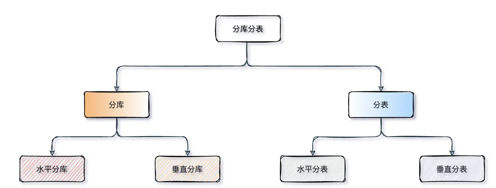

MySQL-性能调优
explain作用
explain就是查看sql的执行计划，分析sql语句的执行过程，比如有没有走索引，有没有外部排序，有没有索引覆盖等等
主要参数：
- possible_keys：可能用到的索引
- key：实际用到的索引，如果是null代表没用用到索引
- ken_len：索引长度
- rows：扫描的数据行数
- type：数据扫描类型 重点就是这个type
type描述找到所需数据时使用的扫描方式是什么，执行效率从低到高：
- All全表扫描
- index全索引扫描
- range索引范围扫描
- ref非唯一索引扫描
- eq_ref唯一索引扫描
- const结果只有一条的主键或唯一索引扫描
-
extra：显示的结果
Using filesort：查询语句中包含group by，且无法利用索引完成排序，不得不选择排序算法进行排序，效率很低
Using temporary：临时表保存中间结果，常见于排序order by、分组查询group by 效率低
Using index：所需数据只需在索引即可获取全部，避免回表，效率不错
慢SQL解决方案/SQL调优
整体
sql调优/优化慢sql一般分为三步：1、定位慢sql 2、查看执行计划 3、针对性优化
通过慢查询日志或者是监控定位到具体的慢sql
用 explain 分析执行计划，重点看是 否走索引、扫描行数、是否有 filesort 或 temporary
接着根据执行计划判断是索引设计问题、SQL 写法问题还是数据量问题。常见优化手段包括补充合适的单列或联合索引、避免索引失效、减少回表、避免 select *、优化 join 顺序、优化深分页，以及在必要时做分库分表、分区或者缓存。我的理解是 SQL 调优不是单纯加索引，而是要结合查询场景、数据分布和执行计划综合判断
慢SQL定位
开启慢查询日志，会记录查询时间超过阈值的SQL
慢SQL原因
可能出现的原因？
- 数据量或并发量太大
- 没用使用索引或使用不当 || 索引区分度太低，优化器认为全表扫描更快
- 回表次数太多，成本过高
- SQL书写不当
- 表结构实际不当
- 业务设计不合理
- 数据库服务器实例性能配置差
可以通过explain分析原因，重点关注type、key、rows、extra，是否走了全表扫描、是否存在索引未被利用、回表过多等情况
慢SQL解决
1、创建或优化索引：查询条件创建合适的索引
2、避免索引失效
3、查询优化：避免select * 只查询真正需要的列；覆盖索引；尽量避免联表查询，必须使用的话以小表驱动大表
4、分页优化：深分页优化，使用主键游标查询
5、是否需要优化数据库表，是否需要分库分表？字段过大？表设计不合理？
6、使用缓存技术：引入缓存层，如redis，存储热点数据或频繁查询的结果
深分页解决
问题
深分页问题是指当使用limit offset,size分页是，offset极大查询性能会急剧下降
因为MySQL需要先扫描offset+size条数据，然后丢弃掉前offset条，仅返回size条，大量的无效扫描导致IO和CPU开销大
解决
1、主键ID游标分页，放弃 offset，用上一页最后一条主键 ID做条件过滤，直接定位数据
- 示例：
SELECT * FROM table WHERE id > 上一页最大ID LIMIT 10; - 优点：走主键索引，无无效扫描，速度极快
- 缺点：需要主键是自增的，不支持跳页，仅适用于滚动加载（APP / 小程序下拉）
2、先通过索引只查主键 ID，减少扫描量，再回表查完整数据
- 示例：
SELECT t.* FROM table t JOIN (SELECT id FROM table ORDER BY id LIMIT 100000,10) tmp ON t.id = tmp.id; - 优点：支持跳页，性能远优于原生深分页
- 适用：后台管理系统等必须跳页的场景
3、给排序字段建索引，用时间 / 状态等条件缩小数据范围
- 示例：
SELECT * FROM table WHERE create_time > '2025-01-01' ORDER BY create_time LIMIT 10; - 优点：实现简单，适配绝大多数业务场景
4、超大数据量终极方案
- 数据量超千万时，用分库分表（按 ID / 时间分片，降低单表量级），或引入 Elasticsearch 等搜索引擎处理分页，从架构上规避 MySQL 深分页瓶颈
分库分表
概述
分库：一种水平扩展数据库的技术，将数据根据一定规则划分到多个独立的数据库中。每个数据库只负责存储部分数据，实现了数据的拆分和分布式存储。分库主要是为了解决并发连接过多，单机 mysql扛不住的问题。
分表：将单个数据库中的表拆分成多个表，每个表只负责存储一部分数据。这种数据的垂直划分能够提高查询效率，减轻单个表的压力。分表主要是为了解决单表数据量太大，导致查询性能下降的问题。
拆分方式
分库、分表可以从垂直和水平两个维度进行拆分

分库
- 垂直分库：按业务模块拆数据库
- 按照业务和功能的维度进行拆分，将不同业务数据分别放到不同的数据库中，核心理念 专库专用
- 按业务类型对数据分离，剥离为多个数据库，像订单、支付、会员、积分相关等表放在对应的订单库、支付库、会员库、积分库
- 垂直分库把一个库的压力分摊到多个库，提升了一些数据库性能，但并没有解决由于单表数据量过大导致的性能问题
- 水平分库：多库拆多表，解决单库性能瓶颈
- 把同一个表按一定规则拆分到不同的数据库中，每个库可以位于不同的服务器上，以此实现水平扩展，是一种常见的提升数据库性能的方式
- 能解决单库存储量及性能瓶颈问题，但由于同一个表被分配在不同的数据库中，数据的访问需要额外的路由工作，因此系统的复杂度也被提升了
分表
- 垂直分表：按字段属性拆单表
- 针对业务上字段比较多的大表进行的，一般是把业务宽表中比较独立的字段，或者不常用的字段拆分到单独的数据表中，是一种大表拆小表的模式
- 数据库它是以行为单位将数据加载到内存中，这样拆分以后核心表大多是访问频率较高的字段，而且字段长度也都较短，因而可以加载更多数据到内存中，减少磁盘IO，增加索引查询的命中率，进一步提升数据库性能
- 水平分表：同库拆多表，解决单表数据量过大
- 在同一个数据库内，把一张大数据量的表按一定规则，切分成多个结构完全相同表，而每个表只存原表的一部分数据
- 水平分表尽管拆分了表，但子表都还是在同一个数据库实例中，只是解决了单一表数据量过大的问题，并没有将拆分后的表分散到不同的机器上，还在竞争同一个物理机的CPU、内存、网络IO等
- 想进一步提升性能，就需要将拆分后的表分散到不同的数据库中，达到分布式的效果
| 拆分方式 | 核心解决问题 | 适用场景 |
|---|---|---|
| 垂直分库 | 单库多业务耦合、连接数瓶颈 | 电商 / 金融等多业务模块系统 |
| 垂直分表 | 单表字段过多、冷热字段混杂 | 用户表、商品表等字段冗余场景 |
| 水平分表 | 单表数据量过大（百万～千万） | 中小规模订单表、日志表 |
| 水平分库 | 单库 IO / 存储瓶颈（亿级数据） | 高并发、超大流量的核心业务 |